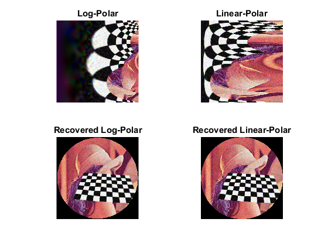

Polar Transforms demo
An example using the cv.linearPolar and cv.logPolar operations.
This program illustrates Linear-Polar and Log-Polar image transforms.
Sources:
Set up camera
camera = createVideoCapture([], 'chess'); pause(1); % Necessary in some environment. See help cv.VideoCapture assert(camera.isOpened(), 'Camera failed to initialize'); im = camera.read(); assert(~isempty(im), 'Failed to capture frames'); [r,c,~] = size(im); disp('Polar transforms demo. Press any key when done.');
Polar transforms demo. Press any key when done.
Set up display window, and start the main loop
window = figure('KeyPressFcn',@(obj,evt) setappdata(obj, 'flag',true)); setappdata(window, 'flag',false); subplot(224), hImg(4) = imshow(im); title('Recovered Linear-Polar') subplot(223), hImg(3) = imshow(im); title('Recovered Log-Polar') subplot(222), hImg(2) = imshow(im); title('Linear-Polar') subplot(221), hImg(1) = imshow(im); title('Log-Polar') % Start main loop while ishghandle(window) % Grab an image im = camera.read(); if isempty(im), break; end center = [c r] / 2; if true radius = min(c,r) / 2; M = c / log(radius); else M = 70; radius = M; end % transform log_polar_img = cv.logPolar(im, center, M, ... 'Interpolation','Linear', 'FillOutliers',true); lin_polar_img = cv.linearPolar(im, center, radius, ... 'Interpolation','Linear', 'FillOutliers',true); % recover recovered_log_img = cv.logPolar(log_polar_img, center, M, ... 'Interpolation','Linear', 'FillOutliers',false, 'InverseMap',true); recovered_lin_img = cv.linearPolar(lin_polar_img, center, radius, ... 'Interpolation','Linear', 'FillOutliers',true, 'InverseMap',true); % show results set(hImg(1), 'CData',log_polar_img); set(hImg(2), 'CData',lin_polar_img); set(hImg(3), 'CData',recovered_log_img); set(hImg(4), 'CData',recovered_lin_img); % Terminate if any user input flag = getappdata(window, 'flag'); if isempty(flag) || flag, break; end pause(0.1); end % Close camera.release();